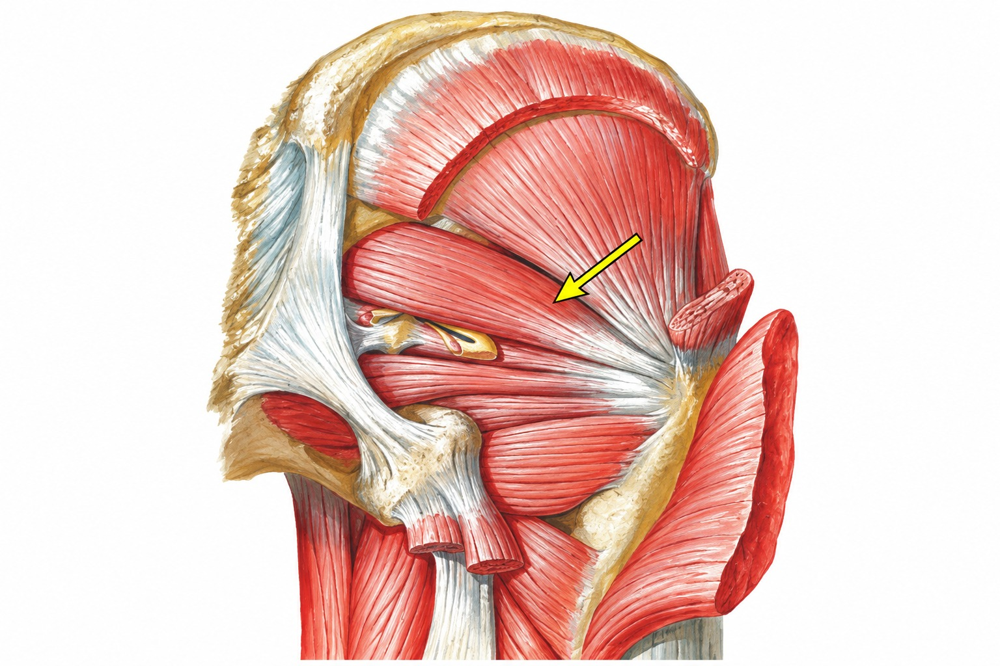

Orto Questões1/3
Orto Questões1/3Anatomia do quadril
Quem é ele?

Peça 0649 · OrtoQuestões Simulados
Na exposição dos rotadores laterais curtos do quadril, a seta identifica o músculo
Apiriforme.
Bgêmeo inferior.
Cgêmeo superior.
Dquadrado femoral.
Fonte: Netter, Atlas de Anatomia Ortopédica, 2ª edição.
Escolha a sua letra. Resposta no próximo story.